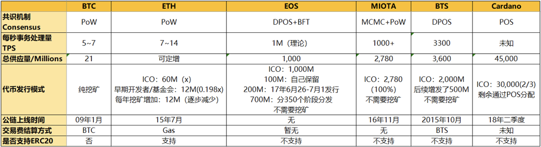
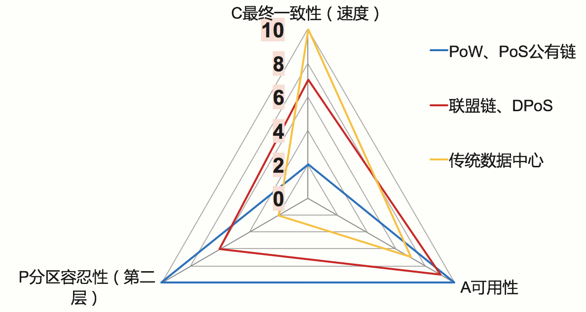

- 00 开篇词 帮你从0到1深入学习区块链技术.md.html
- 尾声篇 授人以鱼，不如授人以渔.md.html
- 新书首发《区块链第一课：深入浅出技术与应用》.md.html
- 第01讲 到底什么才是区块链？.md.html
- 第02讲 区块链到底是怎么运行的？.md.html
- 第03讲 浅说区块链共识机制.md.html
- 第04讲 区块链的应用类型.md.html
- 第05讲 如何理解数字货币？它与区块链又是什么样的关系？.md.html
- 第06讲 理解区块链之前，先上手体验一把数字货币.md.html
- 第07讲 区块链的常见误区.md.html
- 第08讲 最主流区块链项目有哪些？.md.html
- 第09讲 深入区块链技术（一）：技术基础.md.html
- 第10讲 深入区块链技术（二）：P2P网络.md.html
- 第11讲 深入区块链技术（三）：共识算法与分布式一致性算法.md.html
- 第12讲 深入区块链技术（四）：PoW共识.md.html
- 第13讲 深入区块链技术（五）：PoS共识机制.md.html
- 第14讲 深入区块链技术（六）：DPoS共识机制.md.html
- 第15讲 深入区块链技术（七）：哈希与加密算法.md.html
- 第16讲 深入区块链技术（八）： UTXO与普通账户模型.md.html
- 第17讲 去中心化与区块链交易性能.md.html
- 第18讲 智能合约与以太坊.md.html
- 第19讲 上手搭建一条自己的智能合约.md.html
- 第20讲 区块链项目详解：比特股BTS.md.html
- 第21讲 引人瞩目的区块链项目：EOS、IOTA、Cardano.md.html
- 第22讲 国内区块链项目技术一览.md.html
- 第23讲 联盟链和它的困境.md.html
- 第24讲 比特币专题（一）历史与货币.md.html
- 第25讲 比特币专题（二）：扩容之争、IFO与链上治理.md.html
- 第26讲 数字货币和数字资产.md.html
- 第27讲 弄懂数字货币交易平台（一）.md.html
- 第28讲 弄懂数字货币交易平台（二）.md.html
- 第29讲 互联网身份与区块链数字身份.md.html
- 第30讲 区块链即服务BaaS.md.html
- 第31讲 数字货币钱包服务.md.html
- 第32讲 区块链与供应链（一）.md.html
- 第33讲 区块链与供应链（二）.md.html
- 第34讲 从业区块链需要了解什么？.md.html
- 第35讲 搭建你的迷你区块链（设计篇 ）.md.html
- 第36讲 搭建你的迷你区块链（实践篇）.md.html
- 捐赠
第17讲 去中心化与区块链交易性能
第17讲 去中心化与区块链交易性能
通过前面的文章我们了解了一些区块链的基本技术细节，今天这篇文章我将带你一起看看区块链争议的最大内容——去中心化与区块链交易性能。
比特币和以太坊的TPS一直被技术领域的人所诟病，或许这与工程师“高性能高并发”的情节有关。
那么说，去中心化与高性能TPS是否真的可以做到鱼和熊掌的兼具呢？区块链业界又采取了哪些方案进行改善呢？围绕这两个主题，我们开始聊聊今天的话题。
再谈去中心化
说到区块链的最大标签，莫过于“去中心化”，在任何讨论区块链的场合，这个词几乎都会被提起。
今年3月份，全球顶级数字资产交易平台OKEX的负责人徐明星曾经发文，他表示业界应该避免使用“去中心化”这样的词汇，而改用“点对点”，“点对点”一词后来甚至被直接冠到了比特币白皮书的标题上。
去中心化与点对点有区别吗？我认为是有的，去中心化是包含了一定政治主观色彩的词汇，点对点只是一个中性词汇，更适合用来描述系统的性质。
去中心化这种说法树立了一个无形的靶子，这个靶子可大可小，大到政府机关，小到小商小贩。
正如我们说的是P2P网络，而不是去中心化网络。所以在技术领域使用点对点，而不是去中心化，可以避免这种概念被过度消费，
说到了“过度消费”，我认为“去中心化”已经演变成了区块链行业对外宣传的消费概念，这是一种情怀消费，它消费了人们对强权者的不满，例如店大欺客的商家、死皮赖脸的中间商、缺乏诚信的供应商。
这些内容，你或多或少都在生活中经历过，当“去中心化”的口号响起的时候，人们终于找到了一个发泄口，强烈的共鸣放大了区块链的光环，造成了区块链能掀起一场大革新的错觉。
革新肯定是有的，但去中心化只是表象，如果我们加深层次去理解，就可以发现数字货币和数字资产带来更多的是交易效率的成倍提升。
人类的现代文明是建立在交易的基础上的，没有交易就意味着直接回到了农耕社会。所以交易效率的提升才是区块链的根本所在，那么说，区块链本来是这样看似低效的TPS，为什么说它提高了交易效率呢？
我们先回到传统的交易模式来看一看。
交易首先是基于中心化平台的，当我们进入某个中心化平台，在这个平台内部，交易效率是提升了，但是我们回顾整个交易的生命周期，就会发现这个平台可能只是交易的一环，平台和平台之间的协作似乎并不是那么顺畅。
跨境支付便是典型的例子，市值长居Top3的区块链项目Ripple就是为了解决跨境支付的难题而产生的。
我们再来看区块链点对点的交易模式，它的TPS看似低效，但是它提供了全局无缝衔接的资产流转过程，这减少了整个交易生命周期的步骤，这也是区块链提升交易效率的关键所在。
所以说，虽然中心化系统能提供优秀的高性能服务，但是慢在人工审核、平台之间衔接、内部审计，平台之间的协作业务推进，想必你一定也深有体会。
技术上的去中心化
我们在聊DPOS共识机制的时候，提到过一个TPS的计算公式，
TPS = (block_size * network_bandwidth * witness_performance) /- (block_time * witness_count)
其中witness_count 记账节点的数目与准入门槛在业界的争议比较大，如果完全去中心化的话，首先就意味着记账节点没有准入门槛，记账的节点可以无限多，当然这只是一个理想环境，工程实施的可行性几乎为零。
比特币全球的全节点1.2万个，大大小小的挖矿节点只有几十个，常出块的只有5大矿池，但是比特币依然没有限制记账节点的准入门槛，以太坊也是如此。而在EOS中，既规定了记账节点的数目，又规定了门槛。
可以这么说，控制了记账节点的数量和准入门槛，就等于决定了区块链TPS的大小。
为了帮助你深层次地理解去中心化与TPS的关系，这时候我们再次回到之前一直提到的CAP定理中。
CAP定理中，C为最终一致性，决定了出块时间的长短。A是可用性，这个是必选的，必须要保证区块链7 X 24 X 365全部可用。
P是网络分区容忍性，P的含义在区块链上有两层，第一层是必须保证分区可容忍，也就是一旦出现因为网络分区而导致区块链分叉，必须有一种机制可以合并区块链；第二层含义是如果我们尽量避免出现网络分区，那么就可以避免P的出现，从而提升C的性能。
C和P是可以相互调整的，有两种情况。
- 情况1，如果我们选择调整C，也就是拉长了最终一致性的确认时间，那么对P的要求就会减弱，也就是网络产生分区不要紧，反正区块链有足够的时间恢复最终一致性。
- 情况2，如果我们选择调整P，也就是限制较少的记账节点的数量，并且对记账节点之间的带宽提出要求，降低出现网络分区的可能性，那么对C的要求就会减弱，就可以降低出块时间。
情况1就是比特币和以太坊的典型思路，情况2就是EOS的典型思路。
区块链属于分布式系统，通过简单分析我们可以知道，区块链交易TPS与去中心化的具有不可调和性，任何一个号称TPS过万的区块链项目肯定是极其中心化的（至少技术上是的）。
所以，那些试图兼具高性能与去中心化的工作大多都是徒劳的。
各个区块链的TPS指标
我们接下来看看一些区块链项目的TPS指标。

图中是TPS都在千笔以上的区块链项目，通过控制了记账节点的数量，牺牲了去中心化特性提升了TPS，比如石墨烯系列的DPOS，Ripple的共识。
如果我们把CAP做一个可视化处理，就构建出来一个三角形分布，我们可以得到下图：

从图中我们可以看出，PoW、PoS型公链偏好AP特性，于是TPS有限。联盟链以及DPoS型共识偏好比较均匀，可以达到可观的TPS。
传统数据中心往往不考虑P在第二层语义上的问题，更不考虑拜占庭容错问题，所以他们拥有更好的TPS，但是在网络分区和出现拜占庭错误的时候，表现得不尽如人意。
这些共识机制在不同场景中可以有不同的选择，不存在适用所有场景的的共识机制。
业界的可选方案之一：Sharding 分片
好了，我们在上文讨论了CAP定理对区块链的影响，那么业界也还是使出了浑身解数来尽可能地提升TPS。
目前一共有两种正在讨论的方案，分别是Sharding分片技术和闪电网络。闪电网络旨在解决比特币微小额支付的实时性问题，其中的算法是比特币TPS扩展的一种方案，这部分的详细内容我们留到比特币专题再进行讲解。
这两种方案不涉及修改共识机制。如果我们修改为DPoS共识机制、DAG共识算法，也可以提升TPS，不过不在本篇的讨论范围。DAG共识机制我们在后续文章进行深入讨论。
分片技术是一种安装传统数据库分片的扩展，主要思路是将数据库分成多个分区（碎片）并将分区放置在不同的服务器上。
在区块链场景下，全网的节点相当于于分布式数据库中的不同服务器，这时候我们可以将交易分成不同的部分，然后每个记账节点只需要验证交易的一部分即可，而不必验证完整的交易性。
这带来的好处是就是并行化处理，记账节点之间相当于是协作关系，而不再是单纯的独立关系。
随着网络的增长，这种协作关系也可以随之扩展，这种扩展也叫做水平扩容。
分片技术有以下优势：首先是TPS可以从十几笔提升至少两个数量级，也就是千笔每秒，这不但对应用友好，也提升了用户体验；其次TPS的提升可以带来更多应用，这些应用在共识的激励下可以水平扩展区块链的性能，形成一种良性循环。
下面我介绍一下分片的两种方案：状态分片、网络分片。
第一种方案是是网络分片，网络分片是我们按照网络进行分区，区域内的交易归集在一起并在区域内进行验证，这样区域内的用户可以享受低延迟高吞吐的TPS，但是会带来跨区域分片的复杂性。我们也可以将网络分片比喻成数据库集群分区。
其次是状态分片，状态分片是在以太坊上提出的方案，状态分片目前没有确切的技术方案，尚在研究讨论阶段。
我们可以简单类比数据库的分表。我们将同一张表的数据塞到不同的节点，这些节点分布在全世界各地并且没有可信的网络环境。所以状态分片是非常复杂的技术，实践的最终结果我们需要看以太坊后续的动作。
总结
好了，今天我们再次讨论了去中心与高性能区块链的问题，因为有了前面文章的储备，这次我们更深入地讨论了去中心化的深层次逻辑，并从技术理论上重新剖析了去中心化的涵义。
接着我们还比较了各个区块链的性能指标，最后我们提到了一个提升TPS的备选方案。希望读完本篇可以让你对区块链去中心化和性能有更深层次的认识。
本期的问题是，还存在哪些提升TPS的方案呢？各有什么样的优劣？你可以给我留言，我们一起讨论。
感谢你的收听，我们下期再见。
© 2019 - 2023 Liangliang Lee. Powered by gin and hexo-theme-book.